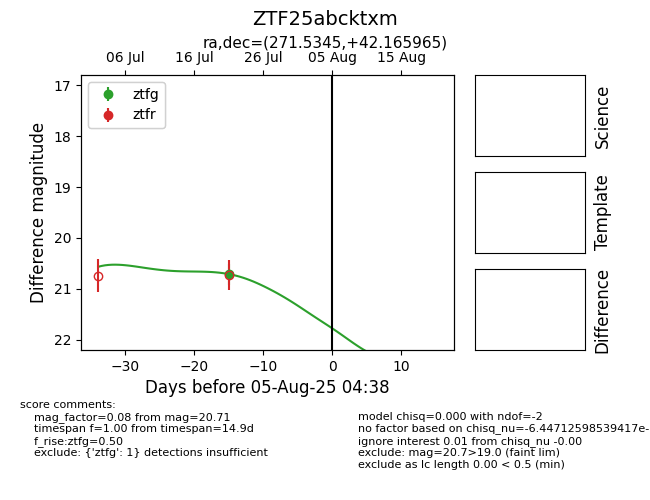

Target ZTF25abcktxm at 2025-08-05 04:38, see:
FINK: fink-portal.org/ZTF25abcktxm
Lasair: lasair-ztf.lsst.ac.uk/objects/ZTF25abcktxm
ALeRCE: alerce.online/object/ZTF25abcktxm
alt names
ZTF25abcktxm (ztf,fink)
coordinates:
equatorial (ra, dec) = (271.5345,+42.16597)
galactic (l, b) = (69.0880,+25.82562)
photometry
last ztfg=20.71
1 ztfg detections
